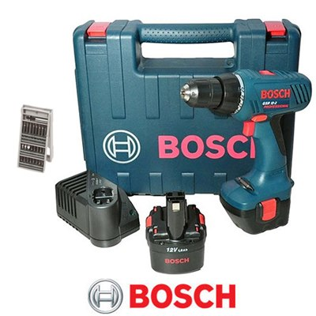

- יצרן:בוש
- סוג מברגה: אימפקט
- מתח עבודה: 12 volt
- מומנט מירבי: NM30


מברגה דו כיוונית אלקטרונית מהירות סיבוב 0-350/1,300 מומנט פיתול 30Nm קוטר קידוח מקסימאלי : בעץ-19 מ”מ במתכת 10 מ”מ תפסנית אוטומטית משקל 950 גרם כולל פטנט E.C.P שתי סוללות ליתיום 2Ah 12V ו- 4Ah 12V מטען מהיר תיק נשיאה מבד
נכתב ע"י יוסף טוטיאן